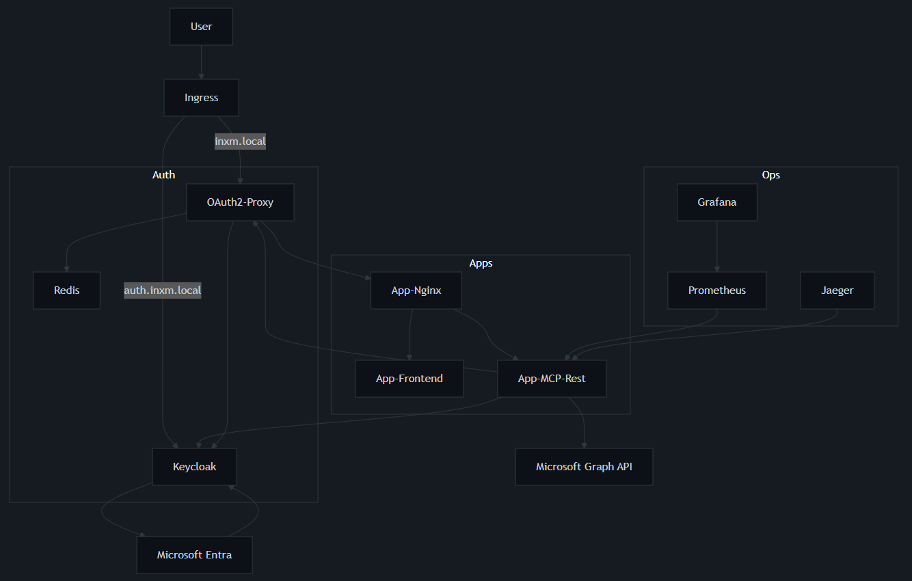

Quick Start
Run the local demo with a default MCP server.
git clone https://github.com/inxm-ai/mcp-rest-server.git
cd mcp-rest-server
pip install "app[all]"
uvicorn app.server:app --reload
Open the API docs: http://localhost:8000/docs
You can test it with the following command:
curl -X 'POST' \
'http://127.0.0.1:8000/tools/add' \
-H 'accept: application/json' \
-H 'Content-Type: application/json' \
-d '{
"a": 2,
"b": 1
}'
Session vs. Stateless Calls
| Mode |
How |
When to use |
| Stateless |
POST /tools/{tool} (no session header) |
Simple one-off tool execution |
| Stateful |
POST /session/start then include header/cookie |
Conversations, multi-step pipelines |
Session Management CLI Examples
Start a Session:
curl -X POST http://localhost:8000/session/start -c cookies.txt
Use the Session:
curl -b cookies.txt -X POST http://localhost:8000/tools/add -H 'Content-Type: application/json' -d '{"a":2,"b":3}'
Close the Session:
curl -b cookies.txt -X POST http://localhost:8000/session/close
Full-Stack Docker Compose Deployment

The following `docker-compose.yaml` provides a complete example of a production-ready, full-stack deployment. It includes everything from authentication and observability to the REST server itself. This aligns with the project's focus on enterprise-grade use cases.
Here is the specific configuration for the core `app-mcp-rest` service:
services:
app-mcp-rest:
container_name: app.mcp-m365-rest-server
image: inxm-ai/mcp-rest-server:latest
environment:
# A human-readable name for the service, useful for logging and observability.
SERVICE_NAME: mcp-m365-rest-server
# The command to launch the specific MCP server that this REST wrapper will connect to.
MCP_SERVER_COMMAND: npx -y @softeria/ms-365-mcp-server --org-mode
# The name of the environment variable that the MCP server will use to receive the OAuth token.
OAUTH_ENV: MS365_MCP_OAUTH_TOKEN
# Specifies the authentication provider to use for token exchange.
AUTH_PROVIDER: keycloak
# Allows the REST server to trust self-signed certificates from the auth provider, useful for local development.
AUTH_ALLOW_UNSAFE_CERT: true
# The base URL of the Keycloak instance.
AUTH_BASE_URL: https://auth.inxm.local
# The Keycloak realm where the authentication is configured.
KEYCLOAK_REALM: inxm
# The alias for the external identity provider (in this case, Microsoft 365) within Keycloak.
KEYCLOAK_PROVIDER_ALIAS: ms365
# Sets a URL prefix for all the REST endpoints to prevent conflicts with other services.
MCP_BASE_PATH: /api/mcp/m365
# A comma-separated list of tool names to exclude from the REST endpoints.
EXCLUDE_TOOLS: login,logout,verify-login
# A comma-separated list of tool name patterns to include.
INCLUDE_TOOLS: "*mail*"
# The endpoint for OpenTelemetry Protocol (OTLP) to send trace data to Jaeger for monitoring.
OTLP_ENDPOINT: http://jaeger:4317
depends_on:
keycloak:
condition: service_healthy
jaeger:
condition: service_started
ports:
- "8000:8000"
labels:
- "oauth2-proxy.enable=true"
networks:
- private
OAuth Token Integration
The server can retrieve, refresh, and inject OAuth tokens for downstream services, simplifying security for your tools.
Flow Diagram: Login
sequenceDiagram
participant User
participant AppIngress as App-Ingress (NGINX)
participant OAuth2Proxy as OAuth2-Proxy
participant Keycloak as Keycloak (auth.inxm.local)
participant AppFrontend as App-Frontend (UI)
User ->> AppIngress: Access https://inxm.local
AppIngress ->> OAuth2Proxy: Route Request
OAuth2Proxy ->> Keycloak: Authenticate (redirect)
Keycloak -->> User: Redirect for Login
User ->> Keycloak: Log in
Keycloak -->> OAuth2Proxy: Redirect with Code/Token
OAuth2Proxy ->> AppIngress: Set Cookie/Header
AppIngress ->> AppFrontend: Serve Frontend
Flow Diagram: Tool Request with Token Exchange
sequenceDiagram
participant AppFrontend as App-Frontend
participant AppIngress as App-Ingress (NGINX)
participant OAuth2Proxy as OAuth2-Proxy
participant AppMCPRest as App-MCP-Rest
participant Keycloak as Keycloak
participant DownstreamAPI as Downstream-API
AppFrontend ->> AppIngress: Request Tool Execution
AppIngress ->> OAuth2Proxy: Route Request
OAuth2Proxy ->> AppMCPRest: Forward with Auth Token
AppMCPRest ->> Keycloak: Request Downstream Token (Token Exchange)
Keycloak -->> AppMCPRest: Return Downstream Token
AppMCPRest ->> DownstreamAPI: Access API with Downstream Token
Contributing to MCP REST Server
Thanks for your interest in contributing! This document explains how to propose changes, report issues, add features, improve docs, and release updates.
📌 Quick Start (TL;DR)
- Fork & clone.
- Create a branch:
git switch -c feat/my-feature.
- Create a virtual env (Python 3.10+).
- Install locally (incl. dev deps):
pip install -e ./app[dev].
- Run tests:
pytest -q.
- Make changes + add/adjust tests.
- Run lint & format.
- Commit using a sensible message.
- Open a Pull Request (PR).
- Agree to the CLA if you haven't
🗂 Project Layout
app/
server.py # FastAPI app wiring
routes.py # REST endpoints & request/session orchestration
models.py # Pydantic-style data models
session/ # Session abstraction & lifecycle mgmt
session_manager/ # Session registry
oauth/ # Token exchange + decorators
mcp_server/ # Server parameter helpers
test_*.py # Tests (pytest)
🧪 Testing
We use pytest. Write tests for every new feature or bug fix. Favor small, explicit tests.
Run the full suite: pytest -q
🧹 Code Style & Quality
Follow standard Python style (PEP 8). Keep functions small, log appropriately, and avoid broad exception catches. Use type hints for new or changed public functions.
🔐 Security & Privacy
Never log raw OAuth tokens or secrets. Validate and sanitize user-provided values. Report vulnerabilities privately before opening a public issue.
🐞 Reporting Issues
Include your environment, install method, reproduction steps, expected vs. actual behavior, and logs (with sensitive data trimmed).
📝 Commit Messages & Pull Requests
Use Conventional Commits (e.g., feat: add session timeout config, fix: handle unknown tool error). Ensure your PR checklist is complete before submitting, including passing tests, updated documentation, and a clear commit history.
🤖 AI-Assisted Contributions
You may use AI tools, but you are the author of record. Carefully review all generated code, ensure it's well-tested, and avoid pasting secrets. Avoid blind bulk rewrites and instead use AI to draft boilerplate or explore alternative designs. Maintainers may request clarification on AI involvement if needed.
🧭 Roadmap Ideas
Feel free to open PRs for these ideas:
- Add session timeout / eviction policy
- Optional Redis / external session backend
- Structured logging config & correlation IDs
- Automated release workflow (GitHub Actions)